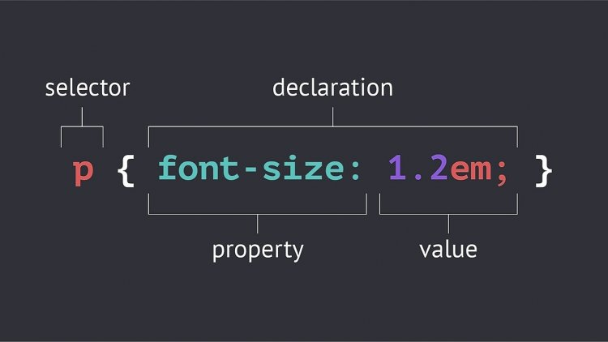

В мире веб-разработки есть множество инструментов, позволяющих управлять внешним видом сайта. Один из самых мощных инструментов — это CSS-селекторы.
Каждый селектор в CSS позволяет выбрать один или несколько HTML-элементов на странице и применить к ним стили. Например, селектор по id выбирает элемент, у которого есть уникальный идентификатор. Этот параграф выделен с помощью селектора по id #special-text.
Кроме того, есть селекторы для изображений. Вот пример:
Изображение выше иллюстрирует концепцию CSS-селекторов и каскадности. Мы можем применить к нему стили с использованием селекторов по классу, id или общих селекторов для всех изображений.
Эта ссылка демонстрирует работу селектора по классу для ссылок."Самое важное — понимать каскадность. Каскадность означает, что стили могут перекрывать друг друга в зависимости от их приоритета. Чем специфичнее селектор, тем больше приоритет его стилей," — говорил мудрый путник веб-разработки.